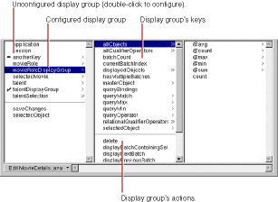
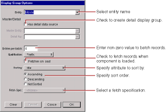

PATH
Documentation > WebObjects 4.5 >
Tools and Techniques
Configuring the Display Group
A display group must be configured in order for it to be created and initialized automatically when the component is initialized at run time. Display groups are instantiated from an archive file (with the extension .woo
) that's stored in the component. You shouldn't edit .woo
files by hand; they're maintained by WebObjects Builder.
In the object browser,
means that the display group has been configured. A
means that it has not been configured, and so the variable isn't automatically created at run time. A configured display group shows its keys and actions in the second column of the object browser. You can bind them to elements in your program.

To configure a display group (or change its configuration), double-click its name to open the Display Group Options panel.

In this panel, you specify the following information:
-
Entity:
The Entity combo box contains entities from the models in your project. You can select one from the list or type the name.
-
Has detail data source:
Check this to create a detail display group. See
Creating a Detail Display Group
for more information.
-
Entries per batch:
Set a non-zero value here to specify the number of records to be displayed at once. When the value is zero, all records are displayed.
-
Qualification:
When displaying records according to a query, this setting determines whether to display records that begin with, end with, or contain the item specified.
-
Fetches on load
: When you check this option, the display group fetches all its objects as soon as the component is loaded into the application.
-
Sorting:
You select an attribute by which to sort your displayed objects from the pop-up list, and use the radio buttons to select the order of sorting.
-
Fetch Spec: The Fetch Spec pop-up list contains all the fetch specification defined in the corresponding model file. A fetch spec is simply a predefined query.
© 1999 Apple Computer, Inc. – (Last Updated July 27 99)